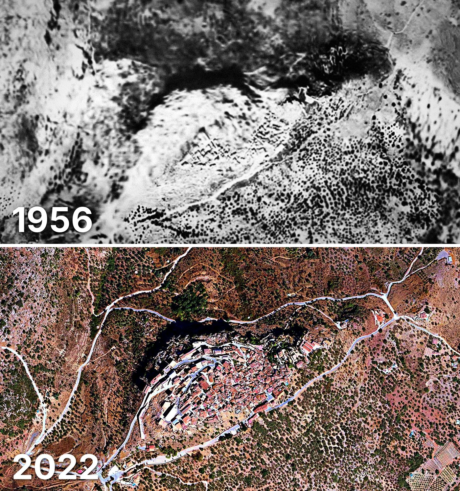

Comares
Comares tiene 653 edificios y 679 viviendas, y 1.354 habitantes en 2025. Al menos la mitad de sus edificios ya estaba en pie en 1956.
Cuándo se construyeron sus edificios
Desde 2015 se han terminado 1 edificios.

Las calles de Comares con más viviendas
- Calle Iglesia · 30 viviendas
- Calle Levante · 30 viviendas
- Calle Hospitalillo · 27 viviendas
- Lugar Encinillas · 21 viviendas
- Calle de Alcuzas · 20 viviendas
- Calle Hotel Bali · 18 viviendas
- Calle del Perdón · 17 viviendas
- Calle los Verdiales · 15 viviendas
- Calle Peñantona · 15 viviendas
Toda la información de Comares en CASAS.ES →
Fotos de Comares para publicar
Estas fotos aéreas de Comares, de 1956 y de 2022, se pueden publicar gratis en un periódico, un blog, la web del ayuntamiento o las redes, citando la fuente como se indica debajo.

Descargar: las dos juntas · 1956 · 2022 (JPG, 1.400 px de ancho)


Texto listo para publicar
Comares desde el aire: así era en 1956 y así es en 2022
Las dos fotos muestran el mismo encuadre de Comares con 66 años de diferencia: arriba, el Vuelo Americano de 1956; abajo, la foto aérea del PNOA de septiembre de 2022. Hoy Comares tiene 653 edificios y 679 viviendas, y 1.354 habitantes en 2025. La mitad de sus edificios es de 1948 o posterior. El 56 % de sus edificios ya estaba en pie antes de 1960.
Más datos de Comares en CASAS.ES: casas.es/malaga/comares
Cita para copiar
Fotos: Vuelo Americano Serie B (1956-57) y PNOA 2022, cedidos por © Instituto Geográfico Nacional (CC BY 4.0, scne.es). Datos y composición: <a href="https://casas.es/malaga/comares/">los datos de Comares en CASAS.ES</a>Descarga: municipios (CSV) · calles (CSV) · Wikidata (Q488895) · cómo usarlos en Python (dev.to) · también en OSF, Figshare y B2SHARE